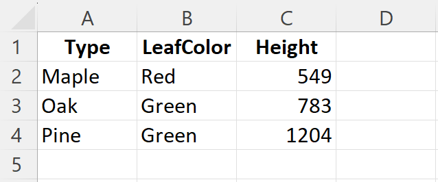
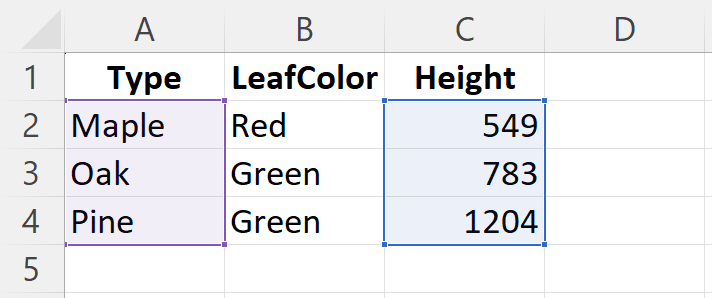
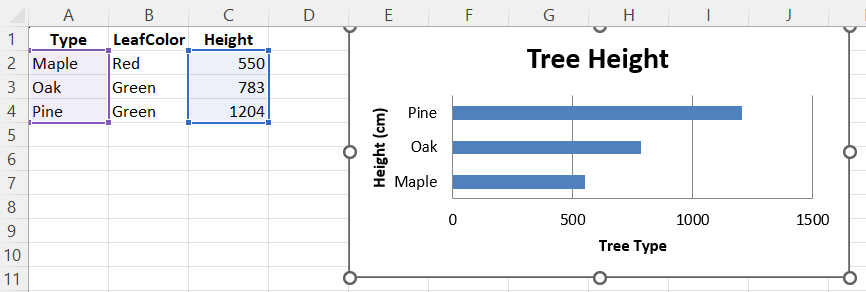

xlcharts 
xlcharts, an R interface to OpenPyXL to create native Excel charts and work with Microsoft Excel files.
- Author: Félix Luginbühl (https://felixluginbuhl.com)
- Source code: https://github.com/lgnbhl/xlcharts
- Issues: https://github.com/lgnbhl/xlcharts/issues
Introduction
xlcharts was born from the lack of existing R packages to create native Excel charts and make advanced customization on Microsoft Excel files using R.
It is an R wrapper for the OpenPyXL Python library using the reticulate R package under the hood. The xlcharts documentation is a partial replica of the OpenPyXL documentation, where Python code is replaced by R code (when possible).
All kudos goes to Eric Gazoni, Charlie Clark and other authors for developing the OpenPyXL Python library.
Installation
Install xlcharts
install.packages("xlcharts")
# development version from GitHub:
#devtools::install_github("lgnbhl/xlcharts")
Install Miniconda
If Miniconda is not install on your machine, an R prompt should ask you if you want to install it after loading the xlcharts R package. Type “Y” for “yes”.
Would you like to install Miniconda? [Y/n]:
You can also install Miniconda using the reticulate R package.
Install OpenPyXL Python library
Then you have to install the OpenPyXL Python library.
You can also specify a desired location for Python before interacting with the functions of the R package.
Create a workbook
To prevent potential formatting issue, we will always load data from an existing Excel file.
If you have a dataframe in R, you can simply write it as an Excel file
using the write_xlsx() function imported from the
writexl R package.
library(xlcharts)
treeData <- data.frame(
"Type" = c("Maple", "Oak", "Pine"),
"LeafColor" = c("Red", "Green", "Green"),
"Height" = c(549, 783, 1204)
)
write_xlsx(x = treeData, path = "treeData.xlsx")

Then you can load the Excel workbook in R using load_workbook().
Let’s get the active worksheet of our workbook.
Access cells
You can access and modify cells using double brackets or cell():
[1] 550
Ranges of cells can be accessed using slicing:
Get the dimensions:
[1] "A1:C4"
Make a bar chart
We need to add references to where the data and categories are in the worksheet.
data <- Reference(ws, min_col = 3, min_row = 2, max_row = 4, max_col = 3)
categories <- Reference(ws, min_col = 1, min_row = 2, max_row = 4, max_col = 1)

Now we can construct the skeleton of what will be our bar chart.
chart <- BarChart(
type = "bar",
title = "Tree Height",
legend = NULL
) |>
x_axis(title = "Height (cm)") |>
y_axis(title = "Tree Type")
And pass the data and categories to the chart object.
We can add the chart to the worksheet.
And finally save the workbook as an Excel file.

For advanced users
The xlcharts R functions give access to OpenPyXL Python classes.
Properties and methods can be accessed using the $ sign on any object,
for example:
The OpenPyXL Python related documentation URL is provided in every R
function documentation, where all arguments/parameters are described in
more details. Documentation can be accessed using the ? sign, for
example:
The xlcharts R package also provides additional R functions (not calling an OpenPyXL Python class) as helpers, to make the R code easier to read and write:
active()x_axis()y_axis()set_catagories()add_data()add_table()add_chart()
It also provides functions imported from other Python modules:
iadd()from the operator Python module.deepcopy()from the copy Python module.
Important differences between Python and R:
- lists start at 0 with Python, but at 1 with R.
- instead of single brackets (
[]) in Python, use double brackets ([[]]) with R.
Always keep in mind that Python array indices are zero-based, while R indices are 1-based.
Numbers used in arguments/parameters should be integers (use L after
the number in R), for example 1L, to be correctly evaluated by the
OpenPyXL Python library.
Contribute
Any contribution is welcomed!
Report any bug or issue here.
If you find this R package helpful, feel free to mention it on social media. You can follow me on LinkedIn for R package updates: Felix Luginbuhl.